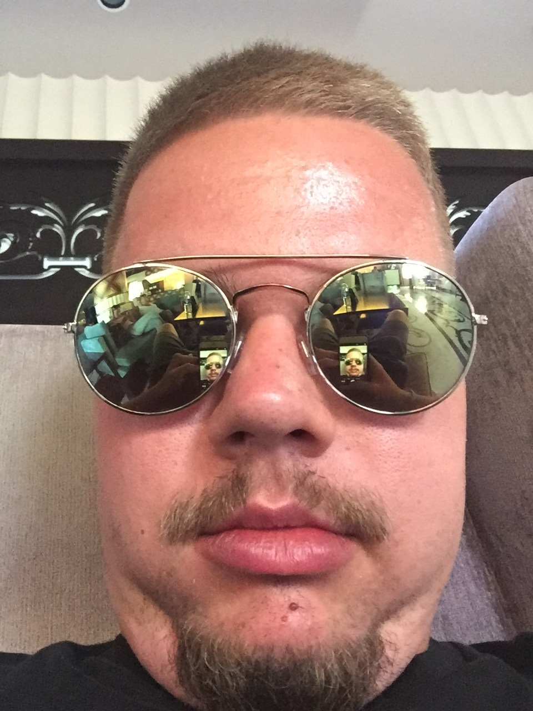

Moje hobby a záujmy
Medzi moje hoby patrí fotografia, grafika, šport a aj programovanie. To že medzi moje hobby patrí aj programovanie je podľa mňa neuveriteľné štastie, pretože som sa našiel v tom čo študujem. Aj keď nevidím sám seba iba ako programátora ale viac aj ako grafika, pretože od malička ma bavilo kreslenie a iná kreatívna činnosť, ale ku počítačovej grafike som sa dostal až počas štúdia na vysokej škole. Popri tom si vybudoval záujem k fotografii. Fotím rád ale bohužiaľ časová náročnosť školy mi neumožňuje sa tomu venovať toľko ako by som chcel. Fotografiu ale beriem skôr ako niečo na odreagovanie, musím na to mať náladu a chuť aby fotky naozaj stáli za niečo. Vo voľnom čase sa venujem aj športu, v poslednej dobe ma fitness baví ale mal som zdravotné tažkosti takže moja fyzická schránka nevyzerá ako schránka niekoho kto má záľubu vo fitnese. Aleakýkoľvek šport ma baví, či už sa jedná o futbal, hokej, florbal, baksetbal, tenis. Samozrejme ako som už predtým písal jedna z mojich záľub je aj programovanie, ale nie iba programovanie v konzole kde človek nemôže grafickú stránku urpavovať, jedine ak, tak počet riadkov pri výpise :) . To je jeden z dôvodov prečo ma to viac ťahá k programovaiu hier, mobilných aplikácii a webových aplikácii. Keďže pri vývoji taýchto systémov sa človek môže pohrávať aj s dizajnom a nejedná sa iba o konzolu a IDE prípadne terminál.